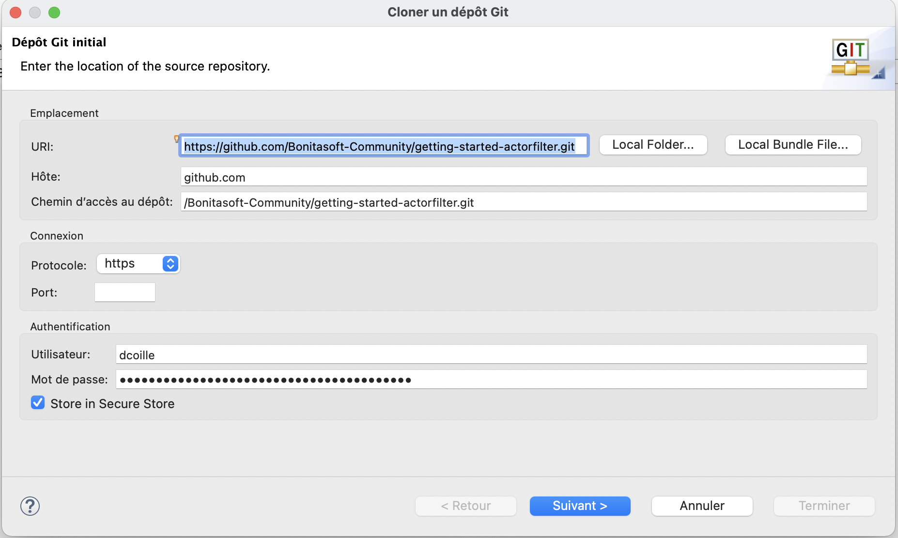
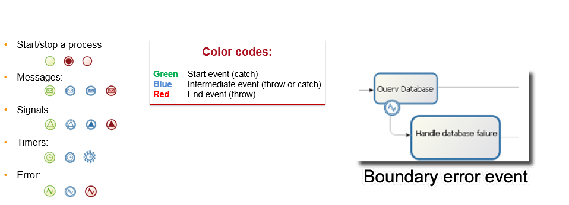
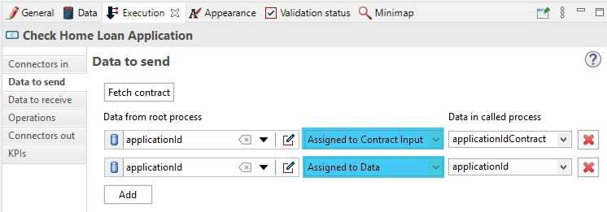
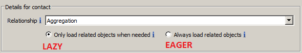
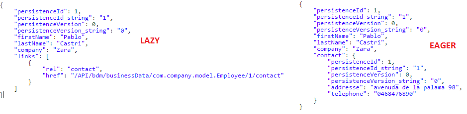
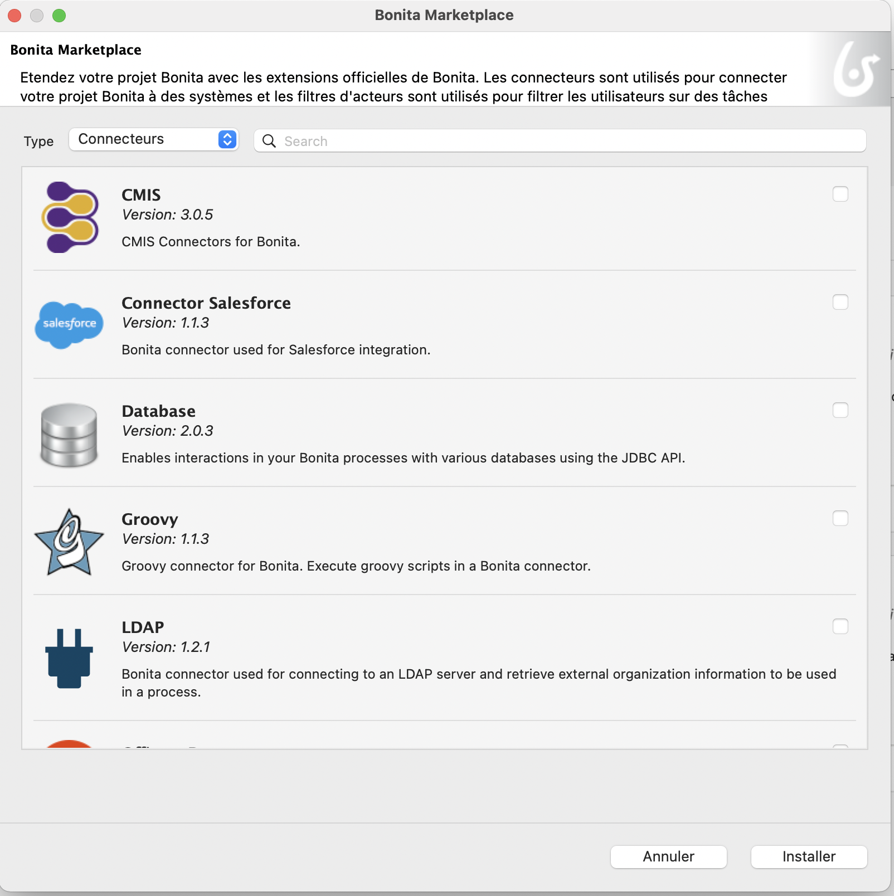
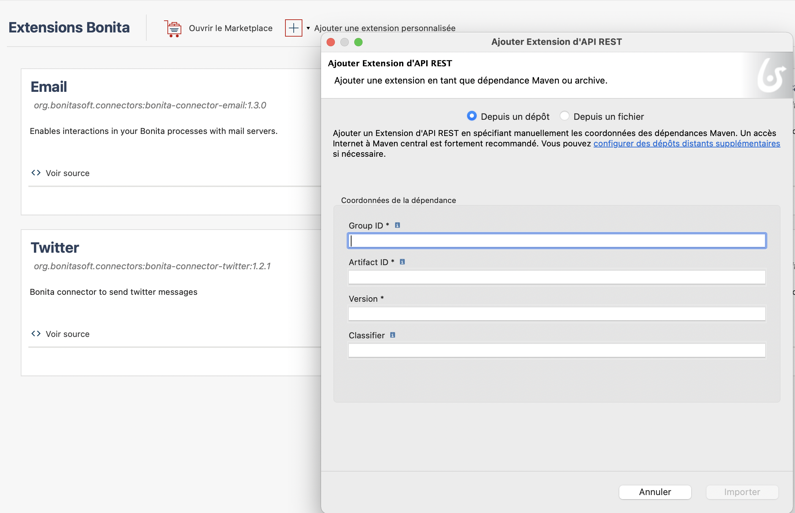
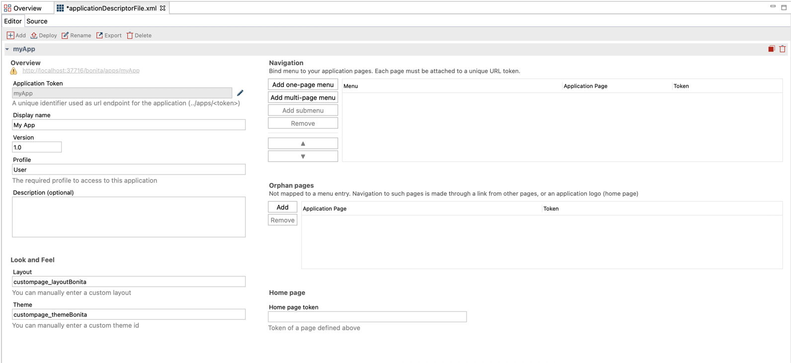
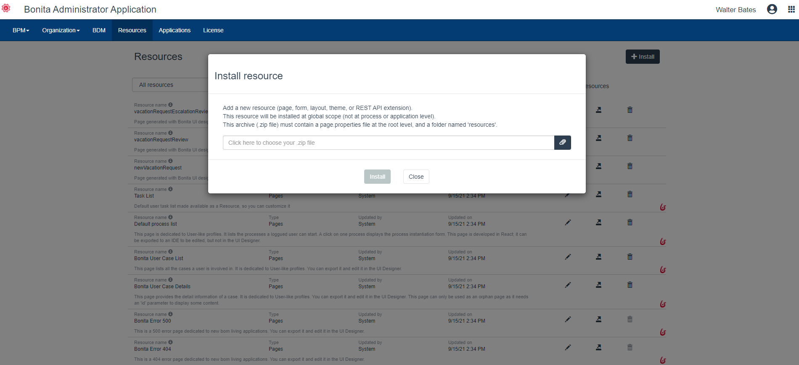

JOUR 2
Delphine Coille
Rappel du programme
Jour 1 - Tout pour créer une première application
- La solution Bonita et les composants de Bonita
- Démarrer un projet Bonita
- Modélisation de processus
- Gestion des données
- Les formulaires de processus
- Gestion des utilisateurs
- Connecteurs
- Applications
Rappel du programme
Jour 2 - Pour aller plus loin dans le développement
- L'architecture de la solution Bonita
- Modélisation et automatisation
- Les données - utilisation avancée
- Les extensions
- L'interface utilisateur
- Déploiement
Rappel Architecture 3-Tier
Facilite la séparation des couches processus, données et interface utilisateur

Rappel Bonita Runtime

Tomcat + Bonita applications + Moteur Bonita + Base de données

Les API Moteur Bonita
- Unique moyen pour communiquer avec le moteur Bonita
- Community edition: packages commencent par org.*
- S'utilisent
- Groovy scripts
- Connectors
- Rest Api Extensions
- Client java externe qui a besoin de communiquer avec le moteur
Les API les plus utilisées
- Login API: accéder au moteur
- ProcessAPI: traiter les actions liées au processus
- IdentityAPI: gérer l'organisation (utilisateurs/groupes/rôles)
- ProcessManagementAPI: déploiement de processus et gestion des droits
Documentation détaillée : Bonita Engine architecture
Les API REST
Les API exposées sont
- BPM REST API
- BDM REST API
- BDM REST Access Control (Enterprise)
BPM REST API: utilisation
- opérations sur le moteur Bonita à partir d'un langage autre que JAVA ou dans une application web en combinaison avec Ajax
- Nombreux API disponibles (bpm, identity, system...)
- 4 opérations : GET, POST, PUT, DELETE

BDM REST API: utilisation
Récupérer de l'information sur un objet, sa structure, ses données
/!\ l'API REST assure l'accès aux données, pas l'ajout ou la mise à jour /!\
La composition de projet dans Bonita Studio
Un projet Bonita est un projet  avec :
avec :
- Nom, version, description
- Maven IDs : groupID, artifactID
Les projets sont intégrés à un workspace en local ou à distance
Récupération automatique des dépendances
La collaboration sur le projet
Les projets peuvent être partagés avec SVN ou Git depuis Bonita Studio
Automatiser les processus : les événements
Interviennent tout au long des processus
Asynchrones 
Boundary event : déclenche un chemin alternatif
Les activités appelantes et sous-processus
Déclenche un sous-processus
Met le processus parent en attente

Les activités appelantes et sous-processus
Mapping des données
Les itérations
3 types d'itérations :
- Boucle standard
- Multi-instanciation en parallèle
- Multi-instanciation en séquence
Le cycle de la donnée, rappel

Le modèle de données métier (BDM)
- 2 modes de chargement : eager ou lazy 
- Persistence gérée par Bonita via librairies Hibernate et la base de données
 |  |
API/bdm/businessData/com.training.model.Employee/{persistenceId}
Développer avec le modèle de données métier
- Les relations : composition et aggrégation
- Les contraintes d'unicité
- Les requêtes : par défaut ou spécifiques
- Accessible par API REST si intégration avec une application tierce ou avec des pages
Ne pas lire ou écrire directement depuis la base de données du BDM mais utiliser les API
Les contraintes des contrats
Contraintes = règles spécifiques de validation de la valeur des données attendues
Définies en utilisant des script Groovy
La donnée, du formulaire aux variables de processuss


Exercice 7
Ajout de contraintes aux contrats
Les extensions dans Bonita
Permet d'adapter le projet à vos besoins en intégrant, entre autres :
- les connecteurs

- les filtres d'acteur

- les thèmes personnalisés

- les extensions d'API REST

Les extensions dans Bonita
Le gestionnaire d'extensions de Bonita Studio pour les centraliser et les utiliser

Les extensions dans Bonita
Les extensions se récupèrent de 2 manières :
|
 |
Développer une extension
Utilisation des archétypes Maven (modèles)
Développement dans votre IDE
Stockage en local ou sur des répertoire distants :
- Maven public ou privé
- Package GitHub
Le cas particulier des extensions d'API REST
Créées dans votre IDE et importées, ou développées depuis Bonita Studio
|  |  |
Filtre d'acteurs - fonctionnement
Remplace complètement l'acteur
Produit une liste d'utilisateurs en fonction d'informations en entrée et d'une logique interne
Exécuté quand l'exécution du processus atteint l'étape associée au filtre d'acteur
Peut être actualisé en utilisant les API
Rappel : acteurs vs filtres d'acteur
| Avantages | Limitations | |
|---|---|---|
| Acteur | Toujours à jour par rapport à l'organisation | Association qui ne peut pas se baser sur des données métier |
| Filtre d'acteur | Association qui peut inclure des données métier | Calculé à l'instanciation d'une étape |
Exercice 8
Ajout d'un filtre d'acteur
L'interface utilisateur: composition
- Formulaires, pages et fragments : la structure
- Containers et widgets : le contenant
- Variables, propriétés et assets : le comportement
Pages
Construites de la même manière que les formulaires
Principale différence au niveau du contexte d'exécution :
- Les formulaires ont des informations sur la définition du processus ou sur l'instance de processus et la tâche
- Les pages n'ont pas d'information de contexte
Les pages peuvent obtenir des informations de BDM et de processus ou déclencher des actions via les API REST
Grouper plusieurs pages et créer un menu pour construire une application
Conteneurs et widgets
Un ensemble de widgets et conteneurs par défaut (champ texte, menu déroulant, sélecteur de date...)
Conteneurs utilisés pour grouper des widgets ou leur comportement
Des widgets personnalisés peuvent être créés avec l'UI Designer
Réutiliser les contributions partagées par la communauté
Fragments
Clés pour la réutilisation et le gain de temps de développement
Pièce élémentaire composée de widgets et/ou de conteneurs.
Soit il a sa propre configuration et ses propres données...
soit il expose les données dans les pages qui l'incluent...
Exercice 9
Enrichir l'application
2 types de déploiement des applications
Déploiement dans un environnement LOCAL depuis le Studio pour des tests
Déploiement dans un environnement de DEV, QUALIFICATION ou PRODUCTION depuis le Portail
Déployer l'application depuis Bonita Studio
Le descripteur d'application permet de définir la structure de l'application :
- Formulaires
- Pages
- Layout
- Thèmes
Déployer l'application depuis Bonita Studio
Déploiement direct pour pouvoir tester
Etapes de déploiement sur le serveur
Organisation puis profils

Etapes de déploiement sur le serveur
API extensions puis pages, layout et thèmes
Etapes de déploiement sur le serveur
Business data model puis processus

Etapes de déploiement sur le serveur
Définition de l'application

Déploiement de processus
Étapes principales du déploiement d'un processus :
| 1. Configuration du processus 2. Génération du fichier Bar |
Studio |
| 3. Déploiement du fichier Bar 4. Configuration du processus 5. Activation du processus |
Application administrateur |